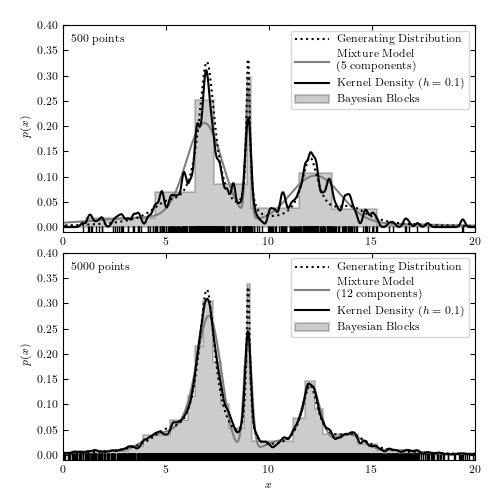

Comparison of 1D Density Estimators¶
Figure 6.8
A comparison of different density estimation methods for two simulated one-dimensional data sets (same as in figure 6.5). Density estimators are Bayesian blocks (Section 5.7.2), KDE (Section 6.1.1), and a Gaussian mixture model. In the latter, the optimal number of Gaussian components is chosen using the BIC (eq. 5.35). In the top panel, GaussianMixture solution has three components but one of the components has a very large width and effectively acts as a nearly flat background.
{kind=link}
# Author: Jake VanderPlas
# License: BSD
# The figure produced by this code is published in the textbook
# "Statistics, Data Mining, and Machine Learning in Astronomy" (2013)
# For more information, see http://astroML.github.com
# To report a bug or issue, use the following forum:
# https://groups.google.com/forum/#!forum/astroml-general
import numpy as np
from matplotlib import pyplot as plt
from scipy import stats
from sklearn.neighbors import KernelDensity
from astropy.visualization import hist
from sklearn.mixture import GaussianMixture
#----------------------------------------------------------------------
# This function adjusts matplotlib settings for a uniform feel in the textbook.
# Note that with usetex=True, fonts are rendered with LaTeX. This may
# result in an error if LaTeX is not installed on your system. In that case,
# you can set usetex to False.
if "setup_text_plots" not in globals():
from astroML.plotting import setup_text_plots
setup_text_plots(fontsize=8, usetex=True)
#------------------------------------------------------------
# Generate our data: a mix of several Cauchy distributions
# this is the same data used in the Bayesian Blocks figure
random_state = np.random.RandomState(seed=0)
N = 10000
mu_gamma_f = [(5, 1.0, 0.1),
(7, 0.5, 0.5),
(9, 0.1, 0.1),
(12, 0.5, 0.2),
(14, 1.0, 0.1)]
true_pdf = lambda x: sum([f * stats.cauchy(mu, gamma).pdf(x)
for (mu, gamma, f) in mu_gamma_f])
x = np.concatenate([stats.cauchy(mu, gamma).rvs(int(f * N), random_state=random_state)
for (mu, gamma, f) in mu_gamma_f])
random_state.shuffle(x)
x = x[x > -10]
x = x[x < 30]
#------------------------------------------------------------
# plot the results
fig = plt.figure(figsize=(5, 5))
fig.subplots_adjust(bottom=0.08, top=0.95, right=0.95, hspace=0.1)
N_values = (500, 5000)
subplots = (211, 212)
k_values = (10, 100)
for N, k, subplot in zip(N_values, k_values, subplots):
ax = fig.add_subplot(subplot)
xN = x[:N]
t = np.linspace(-10, 30, 1000)
# Compute density with KDE
kde = KernelDensity(bandwidth=0.1, kernel='gaussian')
kde.fit(xN[:, None])
dens_kde = np.exp(kde.score_samples(t[:, None]))
# Compute density via Gaussian Mixtures
# we'll try several numbers of clusters
n_components = np.arange(3, 16)
gmms = [GaussianMixture(n_components=n).fit(xN.reshape(-1, 1)) for n in n_components]
BICs = [gmm.bic(xN.reshape(-1, 1)) for gmm in gmms]
i_min = np.argmin(BICs)
t = np.linspace(-10, 30, 1000)
logprob = gmms[i_min].score_samples(t.reshape(-1, 1))
# plot the results
ax.plot(t, true_pdf(t), ':', color='black', zorder=3,
label="Generating Distribution")
ax.plot(xN, -0.005 * np.ones(len(xN)), '|k', lw=1.5)
hist(xN, bins='blocks', ax=ax, density=True, zorder=1,
histtype='stepfilled', lw=1.5, color='k', alpha=0.2,
label="Bayesian Blocks")
ax.plot(t, np.exp(logprob), '-', color='gray',
label="Mixture Model\n(%i components)" % n_components[i_min])
ax.plot(t, dens_kde, '-', color='black', zorder=3,
label="Kernel Density $(h=0.1)$")
# label the plot
ax.text(0.02, 0.95, "%i points" % N, ha='left', va='top',
transform=ax.transAxes)
ax.set_ylabel('$p(x)$')
ax.legend(loc='upper right')
if subplot == 212:
ax.set_xlabel('$x$')
ax.set_xlim(0, 20)
ax.set_ylim(-0.01, 0.4001)
plt.show()